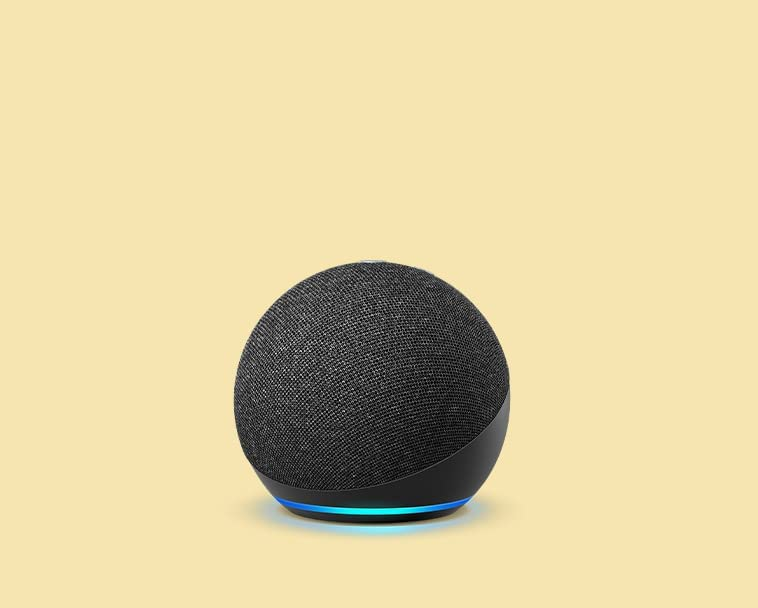

Amazon Astro, Household Robot for Home Monitoring, with Alexa, Includes 6-month
Free Trial of Ring Protect Pro
Price: $33.99
- Keep home closer - Meet Astro, the household robot for home monitoring, with Alexa.
- Introducing Intelligent Motion - Amazon Astro uses advanced navigation technology to find its way around your home and go where you need it. When you're not using Astro, it will hang out close by at the ready.
- Stay connected from anywhere - Remotely send Astro to check on specific rooms, people, or things. Plus, get alerts if Astro detects an unrecognized person or certain sounds when you're away.
- Ring Protect Pro subscription - Activate your 6-month free trial of Ring Protect Pro subscription and have Astro proactively patrol, investigate activity, save videos in Ring's cloud storage for up to 180 days, and more.
- Alexa Together subscription - Remotely care for aging loved ones, giving you peace of mind while helping them live independently. Set up reminders, manage shopping lists, receive activity alerts, and more.
- Put Alexa in motion - Astro can follow you with entertainment or find you to deliver calls, messages, timers, alarms, or reminders.
Add to Cart
Add to List